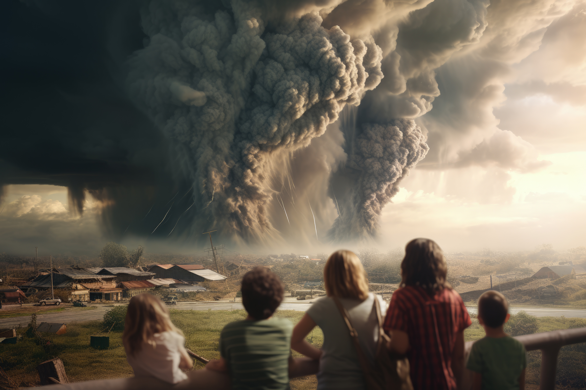

Report 4: The Science Behind Climate Change: Causes and Effects

Introduction
The occurrence of climate change features various elements that originate from natural forces and human-made activities. Greenhouse gas accumulation within Earth's atmosphere has disturbed atmospheric energy stability which triggered major changes in climate patterns. The document offers a complete scientific study of climate change mechanisms together with global warming origins and their consequences for our environment and community structures.
The Greenhouse Effect and Greenhouse Gases

The greenhouse effect functions naturally to warm Earth's surface but climate change stems from this basic process. Earth's atmosphere traps heat from the Sun inside its layers by means of greenhouse gases including carbon dioxide (CO₂), methane (CH₄), and nitrous oxide (N₂O).
Mechanisms of the Greenhouse Effect
The planet absorbs sunlight through its surface before releasing the received energy back to the environment as infrared radiation. Greenhouse gases located in Earth’s atmosphere absorb certain infrared wavelengths and then re-release these energy frequencies to create a heat-trapping effect. The Earth’s climate remains stable through this natural process but too many greenhouse gases result in global warming. People-made activities that include fossil fuel burning combined with deforestation activities have created substantial increases in the concentration of relevant gases while strengthening the greenhouse effect.
Sources of Greenhouse Gases
Fossil fuel burning together with industrial processes and agricultural production form the main atmospheric sources of GHG emissions. Human activities including rapid industrial development since the twentieth century together with livestock methane releases from paddies have strongly elevated CO₂ concentrations and methane percentages in the atmosphere. Climate change increases due to deforestation because trees act as natural CO₂ absorbers. This cutback in tree numbers works as a vicious cycle that makes global warming worse.
Global Temperature Trends and Projections
Evidence of Temperature Rise
Worldwide temperature records demonstrate continuous growth of average global temperatures. Three concrete signs of global warming exist in the melting glaciers and shrinking ice sheets alongside warming ocean temperatures. The combination of satellite analysis with ground observation data confirms rising planet temperatures which demonstrate a quickening trend of global warming. Climate change occurs unevenly across different regions so their climatic situations become complex to study.
Future Projections
Forecasted future warming scenarios result from simulations based on atmospheric-oceanic-terrestrial interaction models. Forecasting models predict more rapid climate change will occur unless the growth of greenhouse gases is properly controlled. Global warming receives additional momentum through positive feedback loops when permafrost melts and releases methane leading to increased fervor for worldwide climate change mitigation.
Extreme Weather Events and Climate Variability

Changes in Weather Patterns
Atmospheric circulation patterns suffer disturbance because of global warming which leads to modified storm intensity and changed precipitation systems. The amount of moisture in warmer atmosphere results in heavier rainfall that raises flood potential. Some areas undergo lengthy drought periods because changes in wind patterns create dampened rainfall conditions. The modifications caused by global climate change harm ecosystems and present major threats to human settlements and economic structures as well as human communities.
Case Studies of Extreme Events
Numerous climate-controlled weather events have occurred throughout recent years. Recent extreme weather events such as California wildfires along with Australian bushfires and Atlantic hurricanes and Asian flooding serve as actual proof of climate change's direct effects on the environment. The present events showcase why society needs advanced preparedness systems combined with adaptable infrastructure to deal with the unpredictability of an altering climate.
Oceanic Changes: Acidification and Sea Level Rise
Marine Ecosystem Impacts
Ocean acidification becomes more severe as carbon dioxide absorption increases because it threatens all marine life but especially affects organisms that build their skeleton using calcium carbonate. The survival challenges that organisms face disrupt entire ecosystems which causes serious effects on biodiversity and affects fisheries that sustain millions of people.
Coastal Vulnerabilities
Ocean levels rising to higher positions leads to coastal damage and causes additional water inundation that contaminates freshwater supplies. The habitable zones in lower regions which contain major cities must now expect periodic flooding leading to possible population relocation.
Feedback Mechanisms and Climate Sensitivity
Climate change follows multiple integrated feedback systems which regulate its operation. The Earth's reflectivity decreases from ice melt because of albedo-positive feedback which makes greenhouse effect warming speed up. Leading policy decisions require precise climate sensitivity information because it reveals how the climate adjustments to changes in radiative forcing.
Mitigation Strategies and International Policy Responses

Current state demands international cooperation to handle climate change effectively. Strategies to mitigate climate change combine efforts between adopting renewable energy sources and applying efficient energy practices with reforestation programs and technology advancements for carbon capture and storage systems. Under the Paris Agreement framework countries unite to determine collaborative approaches to climate solutions including emission reduction commitments.
Technological and Behavioral Adaptations
Both shifts in society behavior and technological advancements will have to be integrated together in order to think for the future climate change mitigation. Emissions can be curtailed with new innovations in clean energy, electric transportation, and smart grid technologies. Changes in consumer’s behavior for stronger environmental sitting along with heightened policy and corporate responsibility are needed as well.
Conclusion
The science behind climate change is as interesting as it is difficult. The actions taken by mankind have cumulatively changed the balance of greenhouse gasses in the atmosphere, triggering an array of consequences in the process such as increasing global temperatures, extreme weather conditions, acidification of oceans, and increase in sea levels. Climate change requires sustainable innovation to address, and environmentally, we need to act now. Everyone sharing the globe today, be it researchers, policymakers, or citizens, are witnessing the truth underlying this earth; thus, it is imperative that we come together as one to protect it.